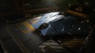

Рабочая вместимость под руду
~48–64 т
На быстром малом Cobra Mk V помещаются все инструменты для добычи: лазеры, пусковая установка сейсмических зарядов и абразивный бластер. Корабль садится на любом аванпосте. Его слабое место — перевозки: отсеки максимум 5-го класса оставляют под руду гораздо меньше места, чем грузовые корабли, оснащённые для добычи. Среди малых стартовых добытчиков он лучший, но с серьёзными рудовозами по тоннажу не поспорит.

Оценка пригодности корабля от 1 до 100 учитывает его полностью улучшенную сборку и сравнивает её с остальными кораблями в этой роли. Подробнее: как оцениваются корабли.
Cobra Mk V продолжает линейку Cobra . Как добытчик он хорошо оснащён для своего размера, но вмещает мало руды. Три средних и два малых крепления спокойно принимают весь комплект: добывающие лазеры для поверхностных залежей, установку сейсмических зарядов, подповерхностную ракету и абразивный бластер. На одном из четырёх внешних креплений можно поставить анализатор импульсных волн для поиска астероидов. Мало какой малый корабль вообще вмещает полный лазерный и подрывной комплект, а у Mk V ещё остаётся место на креплениях.
Ограничение — трюм. Крупнейший дополнительный отсек только 5-го класса, а очиститель и контроллеры дронов-разведчиков и сборщиков оставляют мало места под грузовые стеллажи. Придётся часто заезжать на станцию с небольшими партиями. Преимущества — малая площадка и скорость: корабль быстро долетает до богатых зон, которые обслуживают только аванпосты и куда не садятся средние и большие добытчики. Он хорош для старта и специальных задач, а не для больших объёмов.
Добыча на малом корабле с небольшим бюджетом: обучение всему процессу, подрыв ценных ядер в богатых зонах (пейнит, опалы Бездны, низкотемпературные алмазы), где нескольких астероидов хватает на полный трюм, и работа в кольцах, обслуживаемых только аванпостами.
Четыре особенности Mk V как добывающего корабля, и хорошие, и плохие:
Предел задаёт не оснащение, а вместимость. Даже облегчённый Type-6 или Keelback везёт больше руды за рейс, а большие добывающие грузовики вмещают в несколько раз больше. При базовом щите 160 МДж ценные ядра лучше добывать осторожно: от упорного пирата проще уйти, чем вступать в бой. Преимущества Mk V — доступ к кольцам, скорость и цена, а не тоннаж.
Полный лазерный и подрывной комплект на быстром недорогом корпусе для малых площадок, который садится везде. Но отсеки максимум 5-го класса ограничивают рабочий трюм примерно 56 т, а оценку — 58 баллами.
58/100 — итог по критериям, важным для добытчика. У каждого критерия есть вес (доля от 100). Баллы зависят от результата корабля в сравнении с остальными. Сумма баллов даёт итоговую оценку.
| Критерий | Баллы | Почему столько |
|---|---|---|
| Рабочая вместимость под руду | 12/35 | Рабочий трюм около 56 т (максимум около 110 т без инструментов): самый большой отсек только 5-го класса, а очиститель и контроллеры разведчиков и сборщиков занимают большую часть девяти отсеков. Добывающие грузовые корабли вмещают в несколько раз больше: Type-8 около 406 т, Python около 294 т, Cutter около 794 т. |
| Крепления и отсеки под инструменты | 20/25 | Три средних и два малых крепления вмещают два добывающих лазера, пусковую установку сейсмических зарядов, подповерхностную ракету и абразивный бластер. На четырёх внешних креплениях есть место для анализатора импульсных волн и усилителей щита. Полный лазерный и подрывной комплект с запасом креплений — редкость на малом корабле. |
| Живучесть | 6/15 | Базовый щит около 160 МДж после улучшений вырастает примерно до 550 МДж с двухконтурным генератором и двумя усилителями с «Усиленной конструкцией». Этого хватает на уязвимые минуты при подрыве, но от упорного пирата лучше уйти, чем принять бой. |
| Размер площадки и доступ к станциям | 13/15 | Малая площадка позволяет садиться везде, включая системы с кольцами, где есть только аванпосты, недоступные средним и большим добытчикам. Форсаж 412 м/с помогает быстро отвозить руду и добираться до богатых зон, куда грузовикам пути нет. Это главное преимущество корпуса. |
| Цена и специализация | 7/10 | Корпус около 1,48 млн кредитов, ранг и разрешение не нужны. Сборка класса A обходится примерно в 6 млн. Это один из самых дешёвых полноценных добытчиков с небольшим страховым выкупом. Лучше подходит для обучения и добычи дорогих ядер, чем для перевозки больших объёмов. |
| Взвешенный итог | 58/100 | Сумма совпадает с общей оценкой корабля в этой роли. |
Вес критериев отражает приоритеты авторов руководства, а не игровую формулу. Длинные полосы показывают, в чём корабль набрал больше всего возможных баллов, короткие — где он их потерял. Подробнее: как оцениваются корабли.
Таблицы сравнивают корабли именно для добычии разделяют их по размеру посадочной площадки. Столбец Макс. груз показывает максимальный тоннаж руды. Оценка пригодности выставляется по шкале от 1 до 100, как на остальных страницах.
| Корабль | Класс | Макс. груз | Плюсы и минусы | Оценка |
|---|---|---|---|---|
| Cobra Mk V этот | Малая | ~110 т | — корабль, с которым сравниваем | 58 |
| Cobra Mk III | Малая | ~64 т | Доступ к площадкам; выгодаНиже оценка; живучесть | 52 |
| Adder | Малая | ~30 т | Доступ к площадкам; выгодаНиже оценка; живучесть | 48 |
Из трёх оценённых кораблей для малых площадок лидирует Cobra Mk V (58). Все в этой таблице садятся на те же площадки, поэтому это прямые конкуренты при покупке.
| Корабль | Класс | Макс. груз | Плюсы и минусы | Оценка |
|---|---|---|---|---|
| Imperial Cutter | Большая | ~794 т | Выше оценка; оснащение; живучестьПосадочная площадка | 92 |
| Type-9 Heavy | Большая | ~790 т | Выше оценка; трюм; выгодаЖивучесть | 90 |
| Anaconda | Большая | ~470 т | Выше оценка; оснащение; живучестьПосадочная площадка | 86 |
| Type-7 Transporter | Большая | ~310 т | Выше оценка; выгода; оснащениеЖивучесть | 78 |
| Panther Clipper Mk II | Большая | ~662 т | Выше оценка; трюм; оснащениеВыгода | 77 |
| Imperial Clipper | Большая | ~250 т | Выше оценка; выгода; живучестьПосадочная площадка | 70 |
| Type-10 Defender | Большая | ~534 т | Выше оценка; живучесть; оснащениеВыгода | 70 |
| Federal Corvette | Большая | ~618 т | Выше оценка; живучесть; трюмВыгода | 64 |
| Caspian Explorer | Большая | ~434 т | Выше оценка; оснащение; живучестьВыгода | 60 |
Из девяти оценённых кораблей для больших площадок лидирует Imperial Cutter (92). У них больше площадки и бюджеты, а по характеристикам они превосходят малый корпус. Но это другой класс.
| Корабль | Класс | Макс. груз | Плюсы и минусы | Оценка |
|---|---|---|---|---|
| Type-11 Prospector | Средняя | ~288 т | Выше оценка; оснащение; доступ к площадкамВыгода | 95 |
| Python | Средняя | ~294 т | Выше оценка; оснащение; живучестьТрюм | 90 |
| Krait Mk II | Средняя | ~230 т | Выше оценка; живучесть; доступ к площадкамТрюм | 84 |
| Type-8 Transporter | Средняя | ~406 т | Выше оценка; трюм; оснащениеЖивучесть | 84 |
| Krait Phantom | Средняя | ~190 т | Выше оценка; доступ к площадкам; оснащениеЖивучесть | 70 |
| Corsair | Средняя | ~318 т | Выше оценка; живучесть; доступ к площадкамВыгода | 68 |
| Keelback | Средняя | ~98 т | Выше оценка; живучесть; доступ к площадкамТрюм | 68 |
| Asp Explorer | Средняя | ~130 т | Выше оценка; оснащение; доступ к площадкамЖивучесть | 64 |
| Type-6 Transporter | Средняя | ~114 т | Выше оценка; выгода; доступ к площадкамЖивучесть | 62 |
Из девяти оценённых кораблей для средних площадок лидирует Type-11 Prospector (95). В оригинальном сравнении отмечены более дешёвые корпуса и более тесные площадки; это отдельный класс.
Корпус около 1,48 млн кредитов: один из самых доступных полноценных добывающих кораблей. Ранг и разрешение не нужны. В полной комплектации лазеры, установка сейсмических зарядов, очиститель, контроллеры дронов, грузовые стеллажи и щит обходятся примерно в 6 млн при сборке класса A, заметно дешевле большинства средних добытчиков.
Главный аргумент — цена: полный добывающий корабль за выручку одного удачного рейса, с небольшим выкупом. На обучении или нескольких богатых ядрах возле аванпоста быстро окупится, но большой грузовик за рейс зарабатывает больше.
Полноценный добытчик за несколько миллионов кредитов с недорогим выкупом. Mk V позволяет освоить добычу и работать в кольцах у аванпостов без больших вложений.
Полная сборка малого добывающего корабля для лазеров и подрыва ядер. Начальная требует только покупки. Сборка класса A — рабочая база. Инженерные улучшения повышают мобильность, дальность и защиту. Сами добывающие инструменты почти не выигрывают от улучшений. Из-за небольших отсеков приходится выбирать между грузовыми стеллажами и инструментами.
| Отсек | Начальная · только покупка | Класс A · без улучшений | С инженерными улучшениями | Примечания |
|---|---|---|---|---|
| Оружейные крепления | ||||
| Среднее крепление 1 | 2D Добывающий лазер (неподвижный) | 2D Добывающий лазер (неподвижный) | (нет чертежа улучшения) | Главный инструмент лазерной добычи. Средний неподвижный лазер — крупнейший подходящий. У добывающих инструментов нет оружейных чертежей улучшения. |
| Среднее крепление 2 | — | 2B Пусковая установка сейсмических зарядов (неподвижный) | (нет чертежа улучшения) | Главный инструмент для добычи ядра. Установи сейсмический заряд в трещину, чтобы расколоть астероид. Установка бывает только средней и неподвижной, инженерных улучшений нет. |
| Среднее крепление 3 | — | 2B Подповерхностная ракета (неподвижный) | (нет чертежа улучшения) | Подповерхностная ракета достаёт залежи, до которых не дотягивается бластер. Средняя неподвижная установка — самая крупная, чертежей улучшения нет. |
| Малое крепление 1 | — | 1D Абразивный бластер (неподвижный) | (нет чертежа улучшения) | Абразивный бластер срезает поверхностные залежи с расколотого ядра, чтобы дроны могли их собрать. Добывающие инструменты не улучшаются у инженеров. |
| Малое крепление 2 | — | 1D Добывающий лазер (неподвижный) | (нет чертежа улучшения) | Второй, малый лазер позволяет быстрее снять руду с астероида. Для добывающих лазеров нет чертежей улучшения. |
| Внешние крепления | ||||
| Крепление 1 | — | 0A Анализатор импульсных волн | (нет чертежа улучшения) | Анализатор импульсных волн подсвечивает богатые астероиды и трещины. Класс A даёт самый широкий охват, чертежей улучшения нет. |
| Крепление 2 | — | 0A Усилитель щита | G5 Усиленная конструкция + Суперконденсаторы | Один усилитель с «Усиленной конструкцией» примерно удваивает прочность небольшого двухконтурного щита в МДж. Это самый дешёвый способ повысить живучесть корпуса. |
| Крепление 3 | — | 0A Усилитель щита | G5 Усиленная конструкция + Суперконденсаторы | Второй такой усилитель даёт ещё больше прочности щита на уязвимые минуты подрыва ядра. |
| Крепление 4 | — | 0I теплоотводную катапульту | G1 Дополнительный боезапас (без экспериментального эффекта) | Необязательно. Дополнительный боезапас даёт больше теплоотводов. Они снимают нагрев при скрытном ходе и в паузах использования эффекта «Тепловая вентиляция». |
| Основные модули | ||||
| Обшивка | Лёгкий сплав | Лёгкий сплав | Облегчение 5-й ступени (без экспериментального эффекта) | |
| Энергетическая установка | 4E Энергетическая установка | 4A Энергетическая установка | G5 Низкое выделение тепла + Рассеивание тепла | Поставь класс A, чтобы одновременно питать лазеры, сейсмическую установку и дроны. «Низкое выделение тепла» и «Рассеивание тепла» помогают при долгой добыче. |
| Маневровые двигатели | 4E Маневровые двигатели | 4A Маневровые двигатели | G5 Грязная настройка двигателей + Форсированные двигатели | Класс A маневровые двигатели с улучшением «Грязная настройка» и «Форсированными двигателями» позволяют лёгкому корпусу уйти на форсаже от перехватчиков, которых не победить. |
| Рамочно-сместительный двигатель (FSD) | 4E Рамочно-сместительный двигатель (FSD) | 4A Рамочно-сместительный двигатель (FSD) | G5 Увеличенная дальность + Управление массой | «Увеличенная дальность» и «Управление массой» увеличивают каждый прыжок: так Cobra добирается до далёких колец и везёт руду обратно за меньшее число прыжков. |
| Система жизнеобеспечения | 3E Система жизнеобеспечения | 3D Система жизнеобеспечения | G5 Облегчение (без экспериментального эффекта) | Класс D и «Облегчение» для системы жизнеобеспечения уменьшают массу малого корпуса. Экспериментального эффекта нет. |
| Распределитель энергии | 4E Распределитель энергии | 4A Распределитель энергии | G5 Улучшенная зарядка + Суперпроводники | Поставь распределитель 4-го класса в исполнении A, иначе инструменты и дроны будут терять питание. «Упор на двигатели» 3-й ступени пополняет запас энергии для форсажа, когда нужно уйти от пиратов. |
| Сенсоры | 3E Сенсоры | 3D Сенсоры | G5 Облегчение (без экспериментального эффекта) | Класс D и «Облегчение» уменьшают массу. Добытчику не нужна дальность сенсоров. Экспериментального эффекта нет. |
| Топливный бак | 4C Топливный бак | 4C Топливный бак | (нет чертежа улучшения) | Штатный бак 3-го класса. Вместимость фиксирована, инженерных улучшений нет. |
| Дополнительные отсеки | ||||
| Размер 5 | 5E Грузовой стеллаж | 5E Грузовой стеллаж | (нет чертежа улучшения) | Необязательный отсек под груз. Пригодится специализированным грузовикам. У грузовых стеллажей нет инженерных улучшений. |
| Размер 4 | 4E Грузовой стеллаж | 4E Грузовой стеллаж | (нет чертежа улучшения) | Необязательный отсек под груз. Пригодится специализированным грузовикам. У грузовых стеллажей нет инженерных улучшений. |
| Размер 4 | 2E Очиститель | 4A Очиститель | G5 Защищённый (без экспериментального эффекта) | Необязательно. «Защищённый» повышает прочность очистителя. Этот модуль перерабатывает добытые фрагменты. |
| Размер 4 | 4E Генератор щита | 4C Генератор двухконтурного щита | G5 Укреплённый + Быстрая зарядка | Двухконтурный щит быстро восстанавливается под огнём. «Укреплённый» и «Быстрая зарядка» увеличивают запас прочности в МДж, сохраняя быстрое восстановление. Этого хватает как защиты при подрыве, а не для боя с пиратом. В тихом месте можно заменить его четвёртым грузовым стеллажом. |
| Размер 3 | 1E Контроллер дронов-сборщиков | 3A Контроллер дронов-сборщиков | G5 Облегчение (без экспериментального эффекта) | Необязательно. «Облегчение» уменьшает массу контроллера. Он запускает дронов-сборщиков. |
| Размер 3 | 1E Контроллер дронов-разведчиков | 3A Контроллер дронов-разведчиков | G5 Облегчение (без экспериментального эффекта) | Необязательно. «Облегчение» уменьшает массу контроллера. Он запускает дронов-разведчиков. |
| Размер 3 | — | 3E Грузовой стеллаж | (нет чертежа улучшения) | Необязательный отсек под груз. Пригодится специализированным грузовикам. У грузовых стеллажей нет инженерных улучшений. |
| Размер 2 | — | 1A Контроллер дронов-сборщиков | G5 Облегчение (без экспериментального эффекта) | Необязательно. «Облегчение» уменьшает массу контроллера. Он запускает дронов-сборщиков. |
| Размер 1 | 1I Подробный сканер поверхности | 1I Подробный сканер поверхности | G5 Увеличенный радиус сканирования зондов (без экспериментального эффекта) | Необязательно. «Увеличенный радиус сканирования зондов» расширяет охват каждого зонда. Сканер составляет карты планет для получения данных. |
| Планировщики и экспорт | ||||
| Открыть в Coriolis | открыть | открыть | открыть | Открывает сборку на coriolis.io. |
| Открыть в EDSY | открыть | открыть | открыть | Открывает сборку на edsy.org. |
| Скопировать SLEF | Копирует выбранную сборку в формате экспорта корабельного оснащения (SLEF). | |||
Девять отсеков кажутся щедрым запасом, но очиститель и контроллеры разведчиков и сборщиков занимают большую часть места. Оставшиеся грузовые стеллажи дают всего около 56 т. В тихом месте двухконтурный щит можно заменить четвёртым стеллажом, а где есть пираты, лучше оставить щит. В любом случае рейсы будут короткими, а стыковки частыми.
Купи корпус (около 1,48 млн кредитов) и поставь один средний добывающий лазер, очиститель, контроллеры разведчиков и сборщиков, а также базовый генератор щита . Этого хватит для лазерной добычи поверхностных залежей с первого вылета. Штатную обшивку из лёгкого сплава оставь: лёгкий корпус полезнее военной брони. Крепления под подрыв ядра (сейсмическая установка, подповерхностная ракета и абразивный бластер), место под второй лазер и все внешние крепления пока пустуют, до сборки класса A.
Заполни дополнительные отсеки 5-го и 4-го классов грузовыми стеллажами и оставь место под подробный сканер поверхности для поиска богатых зон.
Переведи на класс A энергоустановку и распределитель энергии как можно раньше, чтобы лазеры и дроны не перегружали небольшие основные модули 4-го класса.
Что первым перевести на класс A для добывающего корабля с малой площадкой:
Энергоустановка и распределитель 4-го класса — узкое место. Переведи оба на класс A до установки инструментов, иначе лазерам и дронам-сборщикам будет не хватать питания. Для распределителя выбирай «Улучшенную зарядку», а не «Упор на двигатели»: лазеры питаются от оружейного конденсатора, так что приоритет двигателей приведёт к перебоям в работе главного инструмента.
Инженерных работ немного: улучшается корабль, а не инструменты. На самих добывающих инструментах инженерия почти ничего не даёт. Felicity Farseer на максимальном уровне улучшает Двигатель FSD. Закрепи чертежи для удалённого применения с 1-й по 5-ю ступень.
| Модуль | Чертёж | Экспериментальный эффект | Инженер |
|---|---|---|---|
| Распределитель энергии (4) | Упор на двигатели (3-я ступень) | — | The Dweller |
| Энергетическая установка (4) | Низкое выделение тепла (5-я ступень) | Рассеивание тепла | Hera Tani |
| Двухконтурный щит (4) | Укреплённый (5-я ступень) | Быстрая зарядка | Lei Cheung |
| Маневровые двигатели (4) | Грязная настройка двигателей (5-я ступень) | Форсированные двигатели | Professor Palin / Mel Brandon |
| Рамочно-сместительный двигатель (FSD) (4) | Увеличенная дальность (5-я ступень) | Управление массой | Felicity Farseer |
| Усилители щита | Усиленная конструкция (5-я ступень) | Суперконденсаторы | Didi Vatermann |
| Обшивка | Облегчение (5-я ступень) | — | Selene Jean |
Немного: модули малых классов, нужны лишь чертежи на мобильность и защиту. Добывающие инструменты остаются штатными, поэтому трудоёмких оружейных улучшений нет. Если запасы полные, собирать материалы не нужно. При необходимости уточни расход по каждому чертежу.
Примерные показатели для трёх вариантов. Точный результат зависит от оснащения:
| Показатель | Начальная | Класс A | С инженерными улучшениями |
|---|---|---|---|
| Руда за рейс (т) | ~32 | ~56 | ~56 |
| Дальность прыжка с грузом | ~14 св. лет | ~20 св. лет | ~30 св. лет |
| Щит (МДж) | ~160 | ~280 | ~550 |
| Броня (очки прочности) | ~180 | ~180 | ~210 |
| Крепления для инструментов | часть | все | все |
| Посадочная площадка | малая (садится везде) | малая | малая |
После улучшений Mk V заполняет трюм примерно на 56 т, защищён достойным двухконтурным щитом и облегчённой бронёй, а прыжки около 30 св. лет позволяют добраться до дальних богатых зон. Получается быстрый, недорогой добытчик, который садится везде. Обшивка остаётся из лёгкого сплава с «Облегчением», а не военной. Это добавляет немного прочности без потери дальности или скорости на форсаже. Трюм остаётся небольшим, и крупный грузовой корабль заработает больше за рейс. Улучшения дают дальность и живучесть, а не тоннаж.
Подойдёт нетронутое металлическое или ледяное кольцо. Ищи богатые зоны с ценными ядрами, где даже небольшой трюм дорогой руды окупается. С базы на аванпосте доступны кольца, возле которых большие грузовые корабли не могут стыковаться.
Cobra Mk V — лучший добытчик для малой площадки и отличный первый корабль для добычи. Вмещает полный комплект для лазеров и подрыва, стоит недорого и садится везде. Оценка 58 отражает жёсткий предел: отсеки максимум 5-го класса не дают взять столько руды, сколько помещается у больших добывающих грузовиков. Выбирай его для обучения, недорогой добычи ценных ядер или работы у аванпостов, но не для заполнения авианосца.
Авторы оригинала сверили данные со следующими источниками.